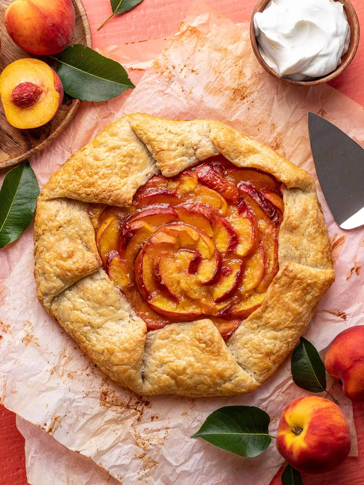

Peach Galette

Description
A beautiful dessert to add to your menu. This peach galette is very easy
to make. Also, we use the help of some pre-made pie crust!
Ingredients
- 1 double pie crust
- 8 peaches
- 1/2 tsp vanilla extract
- 1/2 cup granulated sugar
- 2 Tbsp corn starch
- 1 Tbsp heavy cream
Steps
-
Place a rack in the middle of your oven and preheat to 400°F.
Moisten your countertop and place a 15x15-inch sheet of parchment paper on it.
Dust the parchment paper lightly with flour.
-
Place the pie dough on the parchment paper and roll it out to 14 inches in diameter.
Use a fork to poke a few holes in the center of the dough.
-
Transfer the pie dough on the parchment paper to a sheet pan and chill it in the freezer while you prepare the peaches.
-
Slice the peaches, skin on, into 1/2 inch thick slices.
Place the slices in a large bowl and drizzle with vanilla.
Mix the sugar and cornstarch, then sprinkle over the peaches.
-
Toss the peaches gently to cover them in the sugar mixture,
then place them in a mesh sieve set over the large bowl.
Macerate the peaches until they release their juices, about fifteen minutes.
-
Add the juices to a small pot set over medium heat and bring to a simmer. Do not stir.
Swirl the juices. Once the juices thicken, remove them from the heat.
-
Remove the chilled pie dough from the freezer and layer it with the peach slices,
working from the center out. Leave a four-inch border. Top the peaches with the cooled caramel.
-
Fold the outer lip of the dough over the peaches, pleating it where necessary.
Lightly brush a thin layer of heavy cream onto the top of the galette.
-
Bake for 40 minutes, or until the crust is crispy and golden.
-
Cool the galette on the sheet pan for fifteen minutes before serving.
Use the edges of the parchment paper to help you lift it off the sheet pan.